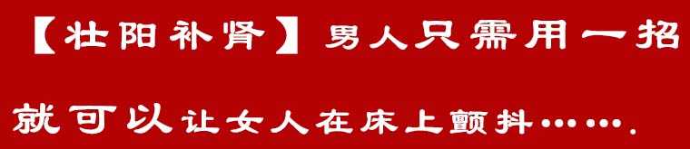
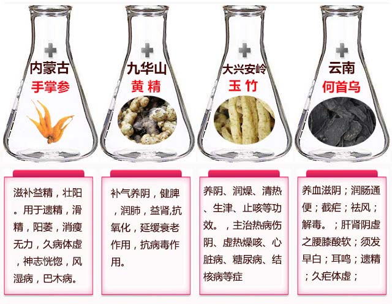
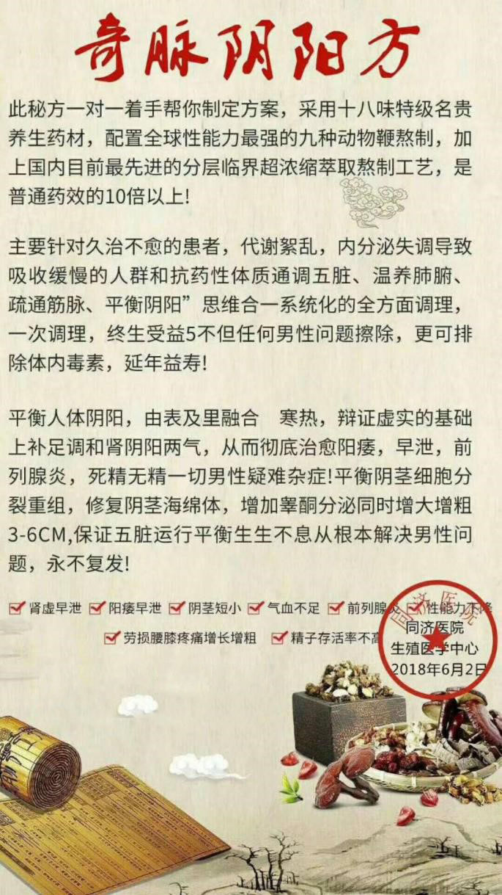

一夜三次，每次40分钟的秘诀
正常亚洲男人勃起长度平均在14.8cm左右，性生活持续时间为25分钟左右，
啪啪的时间长短，以及是否坚硬，和男人的肾器官是紧密相连的，男人的肾就好比汽车的发动机，1.5的排量和5.0的排量，无论是起动，还是爬坡都相差很大，随着年龄的增长，或者是手淫等不良的生活习惯，导致肾器官进入提前衰老阶段，阳痿早泄，肾虚肾寒，勃起无力，疲软不举，前列腺酸疼的症状就相继出现了，男人就会提前“变老”，很多人都和我说过一句话
“我每天拼命的骑车跑步锻炼，不就是为了多喝几斤茅台，多啪啪几次嘛”。
阳痿早泄，肾虚肾寒，疲软无力.......这其实都是肾进入早衰的现象！想摆脱 阳痿早泄，肾虚肾寒，前列腺，疲软无力的朋友们一定要仔细往下看！
在微信中搜索：
qxinyue3169
李先生的“奇脉阴阳方”对阳痿早泄的作用可大着呢：每天坚持做，肾气补回来了，人也变得有精神了！如果想了解，请加微信:
qxinyue3169
(长按复制)
医学认为！肾为先天之本，
肾藏精，主生长发育：肾主藏精，以气为用，关系着人的生长发育。肾气盛衰直接关系到人的生长发育，乃至衰老的全过程，也关系着人的生殖能力！
同济中药馆是同济医药有限公司旗下的一家运用传统手法调理男性问题的老牌养生馆，默默耕耘于望、闻、问、切与辩证调理的传承与创新，对男性壮阳、二次发育的调养一直效果显著，是一所真正传承古法特色的养生馆。
如今李汉老师在同济中药馆坐馆，见证无数被调理好的人，很多人都成了老先生的粉丝。
因为高超的技术和崇高的品德，很多人都送来了锦旗。
老先生最近迷上了直播，经常开直播在线上同网友面对面聊天，直播讲过很多男性调理方法，有兴趣参与直播的朋友可以添加微信号：
qxinyue3169
(长按复制)每月都有机会线上互动。
肾是男人根，乱补伤性命
千万别让激素把你身体“掏空”
肾是男人的命根子，肾也是女人健康美丽的总管家，控制着身体的内分泌，所以说，无论是男人还是女人，肾是人的先天之本！男人30岁之后，肾开始老化，而且阳痿早泄的情况也出现了，大部分男性朋友采用的调理方法都不科学，阴茎太短小或者阳痿了，就吃伟哥，或者是小店里买的各种三无产品和激素，殊不知，这些都不能根除，而且长期使用对身体副作用都很大，千万别让这些激素把你的身体“掏空”，男人要想壮阳延时，补肾养气才是根本之道！
想二次发育、增强男性功能，从根源滋补肾，修复肾，才能真正解决问题，内调方能外养，肾健康了不光是延时壮阳好，人也会变得有精神！千万别急于求成走到误区：
误区1、吃伟哥：破坏人体细胞，长期服用还会对胃、脏器都有一定的损害。时间久了极易产生依赖性，甚至还会得骨质疏松。
误区2、吃保健品就能补肾壮阳：市场上的保健品基本都是炒作用的，基本上是没有什么功效，如果真有功效，国家为什么不给他批一个国药准字的批号，而是只给一个保健食品的批号，大家细想一下就明白了。
误区3、吃人参，锁阳，肉苁蓉等就能壮阳：民间一直都认为这些补品有很强大的补气补肾功效，其实不然。对于气血亏空的人来说，身体虚弱，无法全面吸收这些营养，导致虚不受补。而且血液匮乏跟不上气的运行，反而让人更加虚弱！
养生馆近期推出了一个在线调理活动，添加微信号就可以参加。。
每天前20位咨询者还可以领取性命双修房中术1本，都是古代流传下来的好东西，数量有限，先到先得。
加他微信看看吧：
qxinyue3169
是拔灯芯、还是加灯油？
男人壮阳，得因人而异！
现在社会，节奏快、压力大，十个男人九个虚，力不从心的男人十分普遍，盲目进补的特别多，这点非常让人担心，就比如：人参是好东西，用的巧能起死回生，用不好也能让人一命呜呼，
不同的男人不同的补法，就像过去的灯油，灯不亮了，有的是没油了要加油，而有的油是满的，只需要把灯芯拔一拔！肾虚分阳虚、阴虚和平虚，不能瞎补，弄不好就是吹灯拔蜡！
认清体质再壮阳：补得进，才能固得牢
老先生发现很多阳痿早泄、不坚挺、不持久、短小的问题都是肾早衰引起的，
好多人总是图省事，不清楚自己是哪种体质就胡乱调补，耗了时间花了钱还白遭那罪！这倒不如及早先搞清楚自己的体质，再对症调理，对付阳痿、早泄、时间短这些问题才事半功倍！
添加微信号：
qxinyue3169可以进行在线体质自测，大家可以自查看看，要是符合其中的一项，说明身体已经向你拉响警报，该调理了！
1、 肾亏
肾亏期，多数病人有精神萎靡、腰酸腰痛，体力不支，睡眠不佳(包括失眠、多梦、嗜睡)、性功能减退等症状。
2、 肾阴虚
肾阴虚时，有遗精、尿量多或尿如脂膏、头晕目眩、耳鸣等症状，严重时有耳聋、口干、盗汗、低热、颧红，手足心热等现象。
3、 肾阳虚
肾阳虚时，有腰酸腰痛，性欲减退、滑精、早泄、阳痿等。
男性朋友要注意！先加微信号：
qxinyue3169先给你做个体质测试。一定要辨明自己的体质之后再进行对应的调理。补肾壮阳问题各不相同，了解清楚各种病症的原因，才能对症滋补，从根源调理！
乱补不仅会影响自己下半生的幸福，更会引发一系列危害，严重的甚至会影响下一代健康！千万别等到去了医院花了钱，费了时间，遭了罪。才后悔自己没弄清楚体质就乱调理！
很多人问老先生怎么样才能彻底调理好肾，平时也吃些人参，锁阳，肉苁蓉什么的经常进补，怎么就不见效果呢？
别以为吃人参、锁阳、肉苁蓉就能壮阳，其实配方剂量都不讲究的乱补，效果还不如一只老母鸡！你这样漫无目的乱吃乱补，不光不对症，吃进去的食物也没法吸收掉。效果没法把握不说，反而浪费时间，拖重病情，
让肾气更加匮乏，加速肾早衰不说，还让身体越来越下滑！

那些因为肾虚，阳痿早泄等问题困扰的朋友们，老先生有一套方法，坚持用此方法三四个月，对朋友们就有非常好的保养效果。
只要人精神，身体就很少生病！整个人的精神头特别足！心情也是非常的好！老婆也会更爱你，心情也会更舒畅，什么毛病自然就不来！
壮阳八手：按这几个穴位
阳痿早泄、肾虚肾亏都能改善
笔者在全国各地采访的时候，给他们看了老先生调理好的朋友反馈照片以后，很多男同胞都
逼问我秘诀！
哪有什么秘诀呀，我只能把微信给他们，这些男同胞其中不乏有：
阳痿早泄
肾虚，肾亏
前列腺性功能障碍
阴茎短小
甚至有人快走到离婚的地步......
你猜发生了什么？陆陆续续好多朋友纷纷给我发来消息，千叮万嘱要我代他们谢谢老先生帮他们找回自信呢！
能结识到全国各地的朋友们，一起聊聊天，更能帮大家找回自信！每天听朋友们跟我说说自己的变化，改善！让我觉得特别有成就感！我今天之所以写这篇报道，就是希望把男性养生的方式，跟更多朋友来分享！
在微信中搜索：
qxinyue3169
是不是很羡慕这些调理好的朋友们呀？
李先生的“奇脉阴阳方”对阳痿早泄的作用可大着呢：每天坚持做，肾气补回来了，人也变得有精神了！如果想了解，请加微信：
qxinyue3169
(长按复制)

阳痿早泄、前列腺、肾虚、肾亏、精血不足、筋骨酸痛这些症状都是由肾器官功能降低、衰老导致的！肾虚分肾阴虚和肾阳虚，要根据不同的症状做不同的调理，肾虚多为长期积累成疾。切不可因急于求成而用大补之品进补，或者用成分不明的补肾壮阳物，应慢慢调理，所以每个客户老先生都要了解情况，进行针对性的配药，才能达到更好的效果。